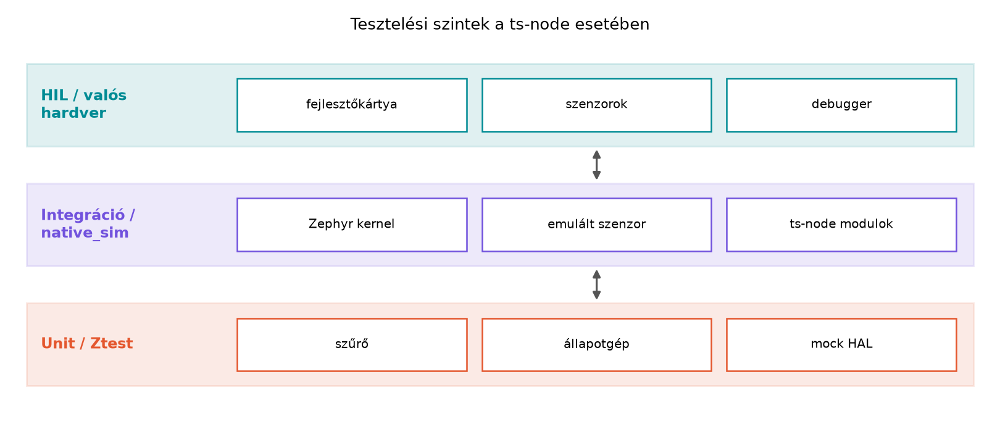

A TerraSense üvegházában a ts-node szenzorcsomópont
szoftverét fejlesztve a leglassabb visszajelzést a valós hardverre
történő flashelés és a terepi hibakeresés adja. Egy szenzorolvasási
logikai hiba például csak akkor derülhet ki, amikor a csomópontot
ténylegesen rákötjük a szenzorra, és megtörténik a mérés. Ha a hibát a
fejlesztőasztalon, hardver nélkül, determinisztikusan reprodukálható
tesztekkel már a build előtt elkapjuk, akkor a fejlesztési ciklus
percekre rövidül, és a hibák nem jutnak ki a terepre. Az Eszközszoftver-architektúra: rétegek és
állapotgépek alfejezetben a ts-node kódját rétegekre
bontottuk: a hardverfüggő szenzorolvasást különválasztottuk a szűrő- és
állapotgép-logikától. Ez a szétválasztás teszi lehetővé, hogy az üzleti
logikát hoston, rögzített bemenetekkel teszteljük. Ebben az alfejezetben
kiegészítjük a firmware-t Zephyr Ztest tesztekkel, mockolt
hardverabsztrakciós réteggel, és futtatjuk a native_sim
célon.
A hoston történő eszközszoftver-tesztelés alapja, hogy a hardverfüggő
részeket interfész mögé rejtjük. A modulok nem közvetlenül hívják a
Zephyr sensor API-t vagy az I2C-meghajtót, hanem egy saját
HAL-t (hardverabsztrakciós réteg, Hardware Abstraction Layer)
használnak.
Definíció. A HAL interfész olyan C nyelvű absztrakció, amely a hardverműveleteket függvénycsoportként írja le, és a felsőbb rétegek csak ezen a felületen keresztül érik el a hardvert. A konkrét implementáció lehet valódi szenzor-meghajtó vagy teszt-mock.
Definíció. A függőség-befecskendezés C-ben azt jelenti, hogy a modul nem fordítási időben köti be a hardverfüggő implementációt, hanem futásidőben kap egy függvénymutatókat tartalmazó struktúrát. Például egy szenzor-HAL:
/* sensor_hal.h */
#ifndef SENSOR_HAL_H
#define SENSOR_HAL_H
#include <stdint.h>
typedef struct {
/* Sikeres olvasás esetén 0, hiba esetén negatív érték.
Az out a hőmérséklet Celsius fokban, milli-fok pontossággal. */
int (*read_temperature_celsius_milli)(int32_t *out);
/* Relatív páratartalom, milli %RH pontossággal. */
int (*read_humidity_percent_milli)(int32_t *out);
/* Talajnedvesség, százalékban. */
int (*read_soil_moisture_percent)(int32_t *out);
} sensor_hal_t;
#endif /* SENSOR_HAL_H */A ts-node logikai moduljai ezt a struktúrát fogadják,
így a tesztben saját, memóriából táplált függvényeket adhatunk át.
Ztest. A Ztest a Zephyr beépített
egységteszt-keretrendszere. A tesztek ugyanabban a buildben fordulnak,
mint a firmware, de nem a termelési main fut, hanem a
teszt-suite-ok. A Ztest makrói (ZTEST_SUITE,
ZTEST, zassert_*) lehetővé teszik suite-okba
szervezett, assertelésen alapuló tesztek írását. A pontos API-nevek a
Zephyr kiadástól függően változhatnak, ezért a példákat ellenőrzési
igénnyel jelöljük.
Twister. A Twister a Zephyr tesztfuttató és
riportáló eszköze. A west twister parancs bejárja a
tesztfákat, lefordítja a teszteket a megadott boardra vagy szimulátorra,
lefuttatja őket, és összesített jelentést ad. A Twister integrálható
CI-rendszerbe, így a host-tesztek automatikusan lefutnak minden push
után.
native_sim. A native_sim egy Zephyr
board, amely nem mikrovezérlőt emulál, hanem a Zephyr kernelt és a
modulokat natív x86-os Linux processzként futtatja. A perifériák nagy
része ebben a környezetben nem elérhető, de a logikai tesztekhez nincs
is rájuk szükség. A native_sim gyors, debuggerrel jól
vizsgálható, és pontosan ez a cél: a hardverfüggetlen részeket hoston
futtatni.

A hardware-in-the-loop (HIL) a tesztelés azon foka, ahol a szoftver valódi vagy nagy pontossággal emulált hardverrel együtt fut. Itt már a valódi időzítések, elektromos jelek és szenzorhibák is szerepet kapnak. Ez az alfejezet csak előkészíti a HIL-t: a logikai teszteket hoston futtatjuk, a HIL-t a Tesztelési szintek: unit, integráció, HIL, terheléses teszt alfejezetben részletezzük.
A tesztelési stratégia kiválasztásakor a következő szempontokat érdemes mérlegelni.
| Szempont | Unit teszt mock HAL-lal | native_sim integráció | HIL valós hardverrel |
|---|---|---|---|
| Sebesség | másodpercek | másodpercek–percek | percek–órák |
| Determinizmus | teljesen kontrollált | kontrollált, de időzítés szimulált | valós időzítés, környezet zajos |
| Hardverhibák modellezése | mockban tetszőlegesen | korlátozott | valós, de nehezen reprodukálható |
| Futtatási környezet | Linux host | Linux host | fejlesztőkártya + labor |
| Legjobb felhasználás | állapotgép, szűrő, szekvenciák | modulok együttműködése, kernel-szolgáltatások | szenzor-kalibráció, teljesítménymérés |
A ts-node esetében a szűrő- és állapotgép-logika tiszta
egységtesztet érdemel mock HAL-lal. Amikor az állapotgép együtt fut a
Zephyr szenzor-alrendszerrel, akkor native_sim integrációs
teszt jöhet szóba. A valós hardvert csak akkor vesszük elő, ha a szenzor
tényleges viselkedését, a bootolást vagy az energiafogyasztást kell
ellenőrizni.
Ebben a laborban a ts-node már meglévő szűrő- és
állapotgép-moduljaihoz írunk Ztest teszteket, és futtatjuk őket
native_sim alatt.
Továbbvitt eredmény. Az itt létrehozott host-tesztek
– test_filter.c, test_irrigation_fsm.c,
valamint a sensor_hal.h mockkal együtt – a CI/CD a firmware-től a backendig alfejezetben a
firmware-feladat részeként automatikusan lefutnak.
Munkakönyvtár:
mkdir -p ~/iot-labor/i020 && cd ~/iot-labor/i020A labor feltételezi, hogy az Eszközszoftver-architektúra: rétegek és
állapotgépek alfejezetből már létezik a ts-node
projekten belül a src/filter.c, src/filter.h,
src/irrigation_fsm.c, src/irrigation_fsm.h és
src/sensor_hal.h. Ha mégsem, az alábbi fájlokat hozzuk
létre.
Először a szűrő modul, egy egyszerű négyelemű mozgóátlag ablakkal. A szűrő a nyers hőmérséklet-méréseket átlagolja, hogy a szenzor zaját csökkentse.
/* src/filter.h */
#ifndef FILTER_H
#define FILTER_H
#include <stdint.h>
void filter_init(void);
void filter_push_temperature(int32_t temp_milli_c);
int32_t filter_get_average_temperature_milli_c(void);
void filter_reset(void);
#endif /* FILTER_H *//* src/filter.c */
#include "filter.h"
#define FILTER_WINDOW_SIZE 4
static int32_t samples[FILTER_WINDOW_SIZE];
static uint8_t count;
static uint8_t next;
void filter_init(void)
{
count = 0;
next = 0;
}
void filter_push_temperature(int32_t temp_milli_c)
{
samples[next] = temp_milli_c;
next = (next + 1) % FILTER_WINDOW_SIZE;
if (count < FILTER_WINDOW_SIZE) {
count++;
}
}
int32_t filter_get_average_temperature_milli_c(void)
{
if (count == 0) {
return 0;
}
int64_t sum = 0;
for (uint8_t i = 0; i < count; i++) {
sum += samples[i];
}
return (int32_t)(sum / count);
}
void filter_reset(void)
{
filter_init();
}Az állapotgép a talajnedvesség alapján nyitja a szelepet. A modul a HAL-t konstruktorban kapja meg, így tesztelhető.
/* src/irrigation_fsm.h */
#ifndef IRRIGATION_FSM_H
#define IRRIGATION_FSM_H
#include <stdbool.h>
#include "sensor_hal.h"
typedef enum {
FSM_IDLE,
FSM_MEASURING,
FSM_IRRIGATING
} fsm_state_t;
void irrigation_fsm_init(const sensor_hal_t *hal);
void irrigation_fsm_tick(void);
fsm_state_t irrigation_fsm_get_state(void);
bool irrigation_fsm_is_valve_open(void);
#endif /* IRRIGATION_FSM_H *//* src/irrigation_fsm.c */
#include "irrigation_fsm.h"
#define SOIL_MOISTURE_THRESHOLD_PERCENT 25
static const sensor_hal_t *hal;
static fsm_state_t state;
static bool valve_open;
void irrigation_fsm_init(const sensor_hal_t *h)
{
hal = h;
state = FSM_IDLE;
valve_open = false;
}
void irrigation_fsm_tick(void)
{
int32_t soil;
switch (state) {
case FSM_IDLE:
state = FSM_MEASURING;
break;
case FSM_MEASURING:
if (hal->read_soil_moisture_percent(&soil) != 0) {
/* Szenzorhiba esetén ne öntözzünk vakon. */
valve_open = false;
state = FSM_IDLE;
break;
}
if (soil < SOIL_MOISTURE_THRESHOLD_PERCENT) {
valve_open = true;
state = FSM_IRRIGATING;
} else {
valve_open = false;
state = FSM_IDLE;
}
break;
case FSM_IRRIGATING:
/* A valós öntözési időt egy időzítő kezelné; itt az egyszerűség
kedvéért a következő tickben visszaállunk IDLE-be. */
valve_open = false;
state = FSM_IDLE;
break;
}
}
fsm_state_t irrigation_fsm_get_state(void)
{
return state;
}
bool irrigation_fsm_is_valve_open(void)
{
return valve_open;
}A teszteket a tests/ könyvtárba tesszük. A Ztest
API-részletei a Zephyr verziójától függően eltérhetnek; az alábbi váz a
jelenlegi stabil Zephyr LTS dokumentációja szerint irányadó, de a pontos
makróneveket ellenőrizni kell.
A szűrő tesztje ismert bemenetsorozatra ellenőrzi az átlagot.
/* tests/test_filter.c */
#include <zephyr/ztest.h>
#include "filter.h"
static void filter_reset_for_test(void)
{
filter_reset();
}
ZTEST(filter_suite, test_average_known_sequence)
{
filter_reset_for_test();
const int32_t values[] = {20000, 22000, 18000, 20000};
for (uint8_t i = 0; i < 4; i++) {
filter_push_temperature(values[i]);
}
zassert_equal(filter_get_average_temperature_milli_c(), 20000,
"négy minta átlaga 20,0 °C legyen");
}
ZTEST(filter_suite, test_window_wraps)
{
filter_reset_for_test();
filter_push_temperature(10000);
filter_push_temperature(20000);
filter_push_temperature(30000);
filter_push_temperature(40000);
filter_push_temperature(50000); /* a 10 ezer kiesik az ablakból */
/* Az ablakban: 20, 30, 40, 50 ezer, átlag = 35 ezer. */
zassert_equal(filter_get_average_temperature_milli_c(), 35000,
"gördülő ablak átlaga 35,0 °C legyen");
}
ZTEST_SUITE(filter_suite, NULL, NULL, NULL, NULL, NULL);Az állapotgép tesztje mock HAL-lal dolgozik. A mock függvények a teszt által állított memóriaváltozókat olvasnak.
/* tests/test_irrigation_fsm.c */
#include <zephyr/ztest.h>
#include "irrigation_fsm.h"
#include "sensor_hal.h"
static int32_t mock_soil_moisture;
static int mock_soil_return;
static int mock_read_soil_moisture(int32_t *out)
{
if (mock_soil_return != 0) {
return mock_soil_return;
}
*out = mock_soil_moisture;
return 0;
}
static sensor_hal_t mock_hal = {
.read_temperature_celsius_milli = NULL,
.read_humidity_percent_milli = NULL,
.read_soil_moisture_percent = mock_read_soil_moisture,
};
ZTEST(irrigation_fsm_suite, test_opens_valve_when_dry)
{
irrigation_fsm_init(&mock_hal);
mock_soil_moisture = 20; /* száraz */
mock_soil_return = 0;
irrigation_fsm_tick(); /* IDLE -> MEASURING */
zassert_equal(irrigation_fsm_get_state(), FSM_MEASURING,
"első tick után mérés állapot");
irrigation_fsm_tick(); /* MEASURING: olvas, dönt */
zassert_equal(irrigation_fsm_get_state(), FSM_IRRIGATING,
"száraz talajnál öntözés állapot");
zassert_true(irrigation_fsm_is_valve_open(),
"szelepnek nyitva kell lennie");
}
ZTEST(irrigation_fsm_suite, test_sensor_error_keeps_valve_closed)
{
irrigation_fsm_init(&mock_hal);
mock_soil_return = -EIO; /* szenzorhiba */
irrigation_fsm_tick(); /* IDLE -> MEASURING */
irrigation_fsm_tick(); /* MEASURING: hiba, vissza IDLE-be */
zassert_equal(irrigation_fsm_get_state(), FSM_IDLE,
"szenzorhiba esetén IDLE állapot");
zassert_false(irrigation_fsm_is_valve_open(),
"szenzorhiba esetén a szelep zárva");
}
ZTEST_SUITE(irrigation_fsm_suite, NULL, NULL, NULL, NULL, NULL);A teszt-suite-okat egy központi fájl indítja. A pontos Ztest indítási
mechanizmus verziófüggő; a Zephyr 3.x alatt a ZTEST_SUITE
regisztrál, és a kernel a test_main függvényt hívja. Ez a
példa a gyakori vázat mutatja.
/* tests/test_main.c */
#include <zephyr/ztest.h>
/* A ZTEST_SUITE regisztrálja a suite-okat, a futtató keret
a linkelt szekciók alapján találja meg őket. */
static void *suite_state_setup(void)
{
return NULL;
}
ZTEST_SUITE(filter_suite, NULL, suite_state_setup, NULL, NULL, NULL);
ZTEST_SUITE(irrigation_fsm_suite, NULL, suite_state_setup, NULL, NULL, NULL);A CMakeLists.txt a tesztes forrásokkal bővül. A Zephyr
natív buildben a tesztek a szokásos módon épülnek.
cmake_minimum_required(VERSION 3.20)
find_package(Zephyr REQUIRED HINTS $ENV{ZEPHYR_BASE})
project(ts_node_tests)
target_sources(app PRIVATE
src/filter.c
src/irrigation_fsm.c
tests/test_filter.c
tests/test_irrigation_fsm.c
tests/test_main.c
)A build és futtatás native_sim célra:
west build -b native_sim
./build/zephyr/zephyr.exeA Twister használata a Zephyr tesztfán belül:
west twister -T tests -b native_simA várt kimenetben minden teszt PASS jelölést kap, például:
Running test suite filter_suite
===================================================================
START - test_average_known_sequence
PASS - test_average_known_sequence
START - test_window_wraps
PASS - test_window_wraps
===================================================================
Running test suite irrigation_fsm_suite
===================================================================
START - test_opens_valve_when_dry
PASS - test_opens_valve_when_dry
START - test_sensor_error_keeps_valve_closed
PASS - test_sensor_error_keeps_valve_closed
===================================================================
PROJECT EXECUTION SUCCESSFULA laborban a sensor_hal.h és a mock HAL a tesztfájlban
él. A termelési kódban a valódi HAL implementáció a Zephyr szenzor
API-ra épül, de az egységtesztekben nem szerepel.
A tesztek sikeres futtatása után a kernel
PROJECT EXECUTION SUCCESSFUL sorral ér véget. Ha egy assert
meghiúsul, a Ztest kiírja a fájlt, a sort és a feltételt. A Twister
jelentése twister.json formában megőrzi az eredményeket,
ami CI-ben is felhasználható.
| Hibatünet | Lehetséges ok | Javítás |
|---|---|---|
Build hiba, ismeretlen ZTEST_SUITE |
Zephyr Ztest API-eltérés | Ellenőrizd a Zephyr dokumentációt, igazítsd a makrókat a használt verzióhoz |
| Teszt lefut, de nem találja a suite-ot | A test_main.c nem regisztrálja a suite-okat |
Győződj meg, hogy minden ZTEST_SUITE a tesztfában
szerepel, és a CMake-szabály hivatkozik rá |
| Assert hiba az állapotgépnél | A mock HAL nem adja vissza a várt értéket | Ellenőrizd a mock beállítását a teszt elején, inicializáld a visszatérési értéket |
native_sim futtatásakor szegmentációs hiba |
Null mutató a HAL-ban, mert nincs beállítva | A teszt elején irrigation_fsm_init(&mock_hal)
mindig hívódjon |
Globális állapot a tesztek között. Ha a teszt
nem inicializálja a szűrőt vagy az állapotgépet minden teszt előtt, a
sorrendtől függő eredményt kaphat. Minden teszt elején hívjuk a
filter_reset vagy az irrigation_fsm_init
függvényt.
Hardverhívás a unit tesztben. Ha a modul közvetlenül hív egy Zephyr szenzor API-t, a hoston nem definiált viselkedéshez vezet. Az üzleti logika csak a HAL interfészen keresztül kommunikálhat.
A native_sim időzítés valós hardverként
kezelése. A native_sim a Zephyr kernel szimulált
időalapját futtatja, de ez nem reprezentálja a valós órajel- vagy
periféria-időzítéseket. Az időzítésre épülő logikát hoston csak logikai
szinten tesztelhetjük.
Fogalmi kérdés: Miért érdemes a szűrő és az
állapotgép modulokat függvénymutatókat tartalmazó HAL-lal tesztelni, nem
pedig közvetlenül a Zephyr sensor_sample_fetch API-t
hívni?
Tervezési feladat: Tervezze meg a HAL interfészt egy kombinált hőmérséklet/páratartalom szenzorhoz, amely egyszerre olvassa mindkét értéket. Adja meg a struktúra mezőit, a hibakezelési konvenciót és indokolja a választást.
Implementációs feladat: Írjon Ztest tesztet a
filter_get_average_temperature_milli_c függvényre, amely
ellenőrzi, hogy üres bemenetre 0-t ad, és hogy három elem után a
részátlag helyes (például 10, 20, 30 esetén 20). A tesztet a
tests/test_filter.c fájlba helyezze.
Hibakeresési feladat: A következő teszt azt
várja, hogy szenzorhiba esetén az állapotgép FSM_IDLE-be
tér vissza. A teszt azonban FSM_MEASURING értéket kap.
Keresse meg a hibát a laborban szereplő irrigation_fsm.c
kódban, javítsa ki, és indokolja a javítást.
A közvetlen Zephyr API-hívás a hoston nem futtatható, mert nincs valódi szenzor. A HAL interfész lehetővé teszi, hogy a teszt egy memóriából dolgozó mock implementációt adjon át, így a modul determinisztikusan tesztelhető. A függvénymutatók ráadásul később lehetővé teszik a valódi implementáció cseréjét is, például másik szenzorra.
A kombinált szenzor HAL:
typedef struct {
/* Egyszerre olvassa a hőmérsékletet és páratartalmat.
Visszatérés: 0 siker, negatív hiba.
temp: Celsius fok milli-fokban, hum: %RH milli %RH-ban. */
int (*read_temp_hum)(int32_t *temp_milli_c, int32_t *hum_milli_percent);
} combi_sensor_hal_t;A közös olvasás azért hasznos, mert a szenzor egy mérési ciklusban adja vissza mindkét értéket, így a modul nem kap konzisztens inkonzisztens párokat. A hibakezelés egységes, a visszatérési érték 0-tól különböző esetén a kimenő paraméterek érvénytelenek.
ZTEST(filter_suite, test_empty_and_partial_average)
{
filter_reset_for_test();
zassert_equal(filter_get_average_temperature_milli_c(), 0,
"üres szűrő átlaga 0");
filter_push_temperature(10000);
filter_push_temperature(20000);
filter_push_temperature(30000);
zassert_equal(filter_get_average_temperature_milli_c(), 20000,
"három minta átlaga 20,0 °C");
}irrigation_fsm.c FSM_MEASURING
ágában van, ahol szenzorhiba esetén a state = FSM_IDLE sor
hiányzik. A helyes kód:case FSM_MEASURING:
if (hal->read_soil_moisture_percent(&soil) != 0) {
valve_open = false;
state = FSM_IDLE; /* ez a javítás */
break;
}
...A hiba azért okozta a hibás tesztet, mert a szenzorhiba után az
állapot FSM_MEASURING maradt, így a
zassert_equal elhasalt.
Az alfejezetben a ts-node firmware hardverfüggetlen
logikáját tettük hoston tesztelhetővé Zephyr Ztest és
native_sim használatával. A kulcsmegoldás a HAL interfész
(sensor_hal.h) és a függőség-befecskendezés: a szűrő- és
állapotgép-modulok függvénymutató-struktúrát kapnak, így a tesztekben
mock implementációt használhatnak. Létrehoztuk a filter.c
mozgóátlag-szűrőt és az irrigation_fsm.c állapotgépet,
valamint a hozzájuk tartozó teszteket a tests/test_filter.c
és tests/test_irrigation_fsm.c fájlokban. A tesztek
west build -b native_sim paranccsal fordulnak, és
./build/zephyr/zephyr.exe futtatással PASS eredményeket
adnak. Továbbvitt eredmény: ezek a host-tesztek a CI/CD a firmware-től a backendig alfejezetben
automatikusan futnak a firmware-feladat részeként.
ZTEST_SUITE, ZTEST, zassert_*
nevek és a west twister kapcsolók a Zephyr aktuális
LTS-dokumentációjában ellenőrizendők. A fenti példák a gyakori Zephyr
3.x szerkezetet követik, de a verziók közötti eltérések
lehetségesek.native_sim board működése: a Zephyr dokumentáció
native_sim fejezete szerint ellenőrizendő a build és
futtatási parancs.